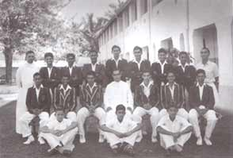
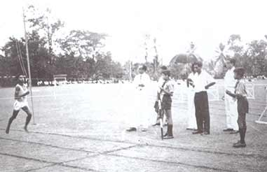
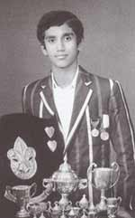
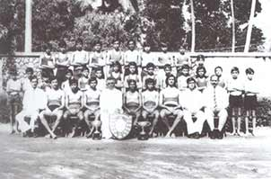
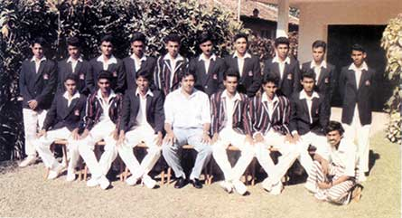
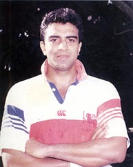
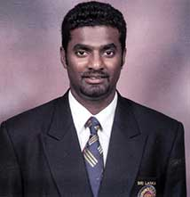
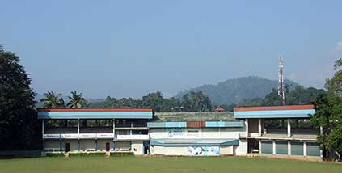
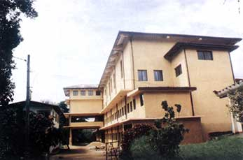

History of the College
1954 - Today
The Antonian cricket teams of subsequent years,
produced some of the
most exciting school boy cricketers with young Wijepala Premaratne being adjudged the very
first 'All Ceylon School
Boy Cricketer' in the year 1956. St. Anthony's College also introduced Rugby Football to its
list of sports in 1956,
with Bruce Winter captaining the first team.
Regno, OSB, Bishop of Kandy and
declared open by the Rt. Hon. Sir Oliver Goonetilleke, C.M.E. Governor General of
Ceylon, on the 5th September
1957. On the 11th Fr. Hilarion Rudolph, a Graduate of the University of Oxford, came to
St.Anthony's as the
Principal in 1957, having to succeed a Principal of the caliber of Fr.Rosati, whose
early demise at the height
of his career spread a veil of emotionalism in the college. He did good work for the
school maintaining the high
standards the College had already reached. In 1959, the Primary School and the Rainbow
Cottages lost the
services of an able leader in Fr. Leo Nanayakkara, who was ordained Bishop of
Kandy.
In 1961, Fr. Rudolph handed over the reins to Fr. D. I. Robinson OSB, who was at the time
Warden of the "Mansion"
boarding and also Teacher of English. It was during this time that the school's takeover was
announced. After much
heartburn, the government finally permitted the College to continue, but non-fee levying.
This was a period of great
hardship, overcome in large measure by the support of the old boys.
Many were the instances when Fr. Robinson accompanied by Mr. Victor Perera, President of the O.B.A. and later Judge of the Supreme Court, had to visit Old boys, parents and well-wishers for donations to keep the College functioning. In spite of these adversities, studies and sports continued to maintain high standards during this time. The Island wide reputation St. Anthony's enjoyed as a provider of top-drawer sportsmen was maintained with Charlie Joseph, a stylish batsman, being selected as 'School Boy Cricketer' for two consecutive years.
The College Choir, ably trained and led by Mr. Cyril Brown, also brought many trophies to the College mantle. Fr. Robinson also had the support of several other Benedictine Priests in Fr. Valentine, Fr. Thomas and Fr. Lanfranc, in running the Boarding, which by that time had attracted over 500 students from all parts of the Island, including a sizeable number from Colombo.
In 1967, an Old Antonian, Fr. Aidan de Silva OSB was appointed Principal in succession to Fr. Robinson. Hard-pressed by the restrictions imposed upon the College as a non-fee levying institution, he organized a donation of five years for each new admission to school, thus enabling an input of funds. Besides giving the school buildings a complete repair, he built the swimming pool, a new Math Laboratory and six modern classrooms. He organized the Colours Night on an annual basis commencing 1967 to honour the College sportsmen. Based on a suggestion made by Fr. Aidan, the President of the OBA, Mr. R. Victor Perera, launched a 'Turf Pitch Fund' with his own generous contribution of a Thousand Rupees, at the first Central Council meeting of the OBA after the Big Match of 1969. The Turf Pitch was completed, blessed by Rt. Rev. Lord Abbot Dom Pio Federici OSB and declared open on the 30th January 1970 with Fr. Aidan facing the first ball bowled by Mr. Victor Perera. 
The College Swimming Pool was built during his time and St. Anthony's also excelled in Basketball and Tennis, with College producing the best Tennis doubles pair among the schools. He was also instrumental in launching the Christmas Carols and Easter programmes which were much looked forward to events. During this period, the College Choir was invited to perform in a SLBC programme, which was an honour for any College Choir at that time. Fr. Aidan was also instrumental in recommencing the regular publication of 'The Antonian' magazine. Between the 50's and the 70's, St. Anthony's College had a well-established hostel, with over 500 boarders, who came from all parts of the Island. They were spread among 14 cottage type dormitories, arranged in succession, according to age groups. The hostel was supported by a livestock farm, bakery and a fully equipped sickroom, to cater to the needs of the boarders. During this period, the kitchen and refectory at St. Anthony's College was the envy of all visiting school teams, who, to this day, talk about the sumptuous meals they enjoyed at St. Anthony's.
The unfortunate incident that took place in 1977 changed the identity / status of St. Anthony's College Kandy, when the school was handed over to the government by the then Bishop of Kandy. In 1977, Fr. Aidan de Silva retired and Fr. Lanfranc Amerasinghe OSB, who was warden of hostels took over as the Principal. He had to struggle hard to keep the school running as a government institution. He emerged unscathed and handed over the reins of the college in 1979 to Fr. Stephen Abraham OSB who had to manage the school with limited resources. The hostel was run independent of the school, by the Benedictine Fathers, who also had the income generating sections - the hall, the swimming pool and the tuck shop - under their jurisdiction. This bifurcation made it difficult for the new Director-managed College to survive, minus all its wonted resources. The facility fees of Rs.5/- per student, was all it got. 
What Fr. Stephen did do under the circumstances was remarkable. His enthusiasm made Hon. R. Premadasa, Prime Minister at the time, donate a two-story block of classrooms, which forms one wing of the school and is called the "Premadasa Block". Most of all, he earned the fullest cooperation of the old boys to support his bid to elevate the college as a most prestigious centre of education, not only in the central province but also in the country.
1981 was a memorable year for Antonian Cricket, when they beat Trinity in the Big Match for the very first time at the Asgiriya Ground, thus ending what was thought to be a jinx.
In 1982 the Colombo branch of the OBA undertook a gigantic task when, under the presidency of the then minister of Power and Energy, K. D. M. C. Bandara, they embarked on a project to develop an Indoor Sports and Pavilion Complex at the Katugastota grounds. However, with the communal troubles the country faced since 1983, raising funds became a difficult task up to about 1989. The project, named "Bishop Leo Nanayakkara Sports and Pavilion Complex", was planned in three stages. The first stage consisting of a gymnasium, badminton and table tennis courts was finally completed in 1991 with the help of funds collected by the old boys and Fr. Stephen Abraham. In March 1992 this Sports Complex was officially opened by Mr. K.D.M.C. Bandara and handed over for use by the College.

The 'College Diary' was re-introduced in 1987 after a lapse of several years, and has continued to be published annually, ever since, making available the yearly plans of College to the Antonian community. A Public Address system was installed in 1988, effectively enhancing better communication within the vast area of College.
he second stage of the project, which consisted of accommodation for visiting teams, a sports pavilion and public stands was named "Jack Anderson Pavilion" after the legendary Antonian cricketer. Fund raising for this stage was spearheaded by Fr. Stephen Abraham and Minister K. D. M. C Bandara. A total sum of around 4 million Rupees was raised in a very short time through donations from parents, old boys, well-wishers and fund raising events such as 'Dances' and 'Coffee Mornings' in Colombo and a carnival in Kandy. This effort enabled the building to take a shell-shape within a period of just four months and was opened by Rev. Fr. Stephen Abraham in March 1993 to commemorate the 75thyear of Jack Anderson's unbroken record of 291 runs in a school match against St. Thomas' College, Mt. Lavinia. Finishing touches were completed on this building in 1993, and has since, been used by the College as its main Pavilion. Work on the third and final stage of the complex commenced in 1994. 
Fr. Stephen Abraham displayed his strength in standing up fearlessly for the principles he believed in, when during the 1988/89 southern revolution, St. Anthony's College became the only government school that did not walk out to revolutionary demands.
Other highlights of his stewardship were the Grand School Exhibition in 1979 to mark 125 years of the school's existence (1854-1979), which was graced by President J.R. Jayawardena and celebration of 100 continuous years of Benedictine Monks as Principals (1892-1992). On the latter occasion portraits of all past Principals were unveiled in the hall by distinguished persons and thanks offered to God for the innumerable blessings bestowed on the school through the celebration of a special Holy Mass at which the Archbishop of Colombo and the Bishop of Kandy participated.
In 1989 Fr. Stephen Abraham celebrated his Sacerdotal Silver Jubilee (25 years of Priesthood) by building 25 houses for the minor staff naming the complex "Anthony Gammana" which is a model-housing scheme. His versatility helped the school to achieve high standards of performance in sports such as cricket, rugby, etc. while upholding the traditional excellence in studies for which the College has been well known.
The Department of Education in recognition of the success St. Anthony's had achieved under Fr. Stephen Abraham, approved the construction of a new three-storey of buildings at a cost of 8 million rupees, in 1994. 
Fr. Abraham, being a firm believer that true character of students could be judged and developed on the playing field and not in the classroom, dedicated much of his time to the numerous sporting activities at college. His encouragement of sports paid rich dividends, particularly in the success the College enjoyed in Cricket, Rugby, Badminton and Table Tennis during the late eighties and early nineties. Many Antonian sportsmen of that era went on to represent National teams, with two in particular, receiving international acclaim. Priyantha Ekanayake who captained the Sri Lanka Rugby Football team for a record ten years, with much success, continues to play a leading role as an administrator and coach at national level. The other of course, is the World's Best Off-Spin Bowler in cricket; Muttiah Muralitharan, who became the highest wicket taker in one day international cricket and in test cricket by breaking Shane Warns world record of 708 wickets
The early and mid nineteen-nineties were some of the best years for sports at St. Anthony's College. The Cricketers won three major awards at the 'Island/Pure Beverages' and six major awards at the 'Bata/Observer' competitions in 1990. Muttiah Muralitharan - "Best Schoolboy Cricketer of the year" & "Best Bowler", Nuwan Kalpage - "Best Captain", and Sajith Fernando - "Best Batsman" were among them. Sajith Fernando was also selected the "Best All-Rounder" at the 'Bata/Observer' ratings in 1991. The greatest moment however was in 1993, when three Antonians; Ruwan Kalpage, Muttiah Muralitharan and Piyal Wijetunge were selected to play for Sri Lanka in the first Test Match against South Africa. A fourth Antonian; Sajith Fernando was also in the reckoning but sadly missed out. Mahesh Gunatilleke, Bernard Perera and Marlon Von Haght were the other Antonians to have represented Sri Lanka at Test Cricket in the nineteen-eighties. 
The Paddlers, spearheaded by Christopher Arnolda & Umesh de Alwis brought much fame to College. Arnolda was seeded No: 1 and Alwis No: 5 at National level, and both went on to represent Sri Lanka in later years.
The Shuttlers dominated the local schools Badminton tournaments through most of the last decade of the century, with as many as ten Antonians winning National Titles.
The Ruggerites continued to hold their own against top Rugby Schools, and was a major feeder of quality ruggerites to the local club teams in Kandy & Colombo, with many Antonians going on to represent the Country. The Old Antonians Rugby Football Club has been a major support base ever since their inauguration in the early nineteen-nineties.
Having served as Principal for sixteen long years (1979 - 1994), Fr. Stephen Abraham retired, content with what he had achieved for St. Anthony's College Kandy. He was the second longest serving Principal, next to Fr. Lawrence Hyde.
Fr. Hilarion Fernando OSB succeeded Fr. Stephen Abraham in April 1994, and completed ten years in the seat on the auspicious occasion of the Sesquicentennial of College. He is also the fifteenth member of the 'Sylvestro Benedictine Order' (OSB) to hold the post, in 112 years. Prior to his appointment as Principal, Fr. Hilarion served as Warden of Hostels from 1983 - 1991, and as Head Master of the Primary Department from 1990 - 1994.
The Old Boys Association Parent Body and Colombo Branch jointly organized a Gala Dinner at the Hotel Suisse - Kandy, on 5th November 1994, to bid farewell to Fr. Stephen Abraham and to welcome Fr. Hilarion Fernando.
The OBA (Colombo Branch) published a directory of Old Antonians, titled "Antonian Connection", in 1994. This spiral bound publication was not only a first for Antonians, but also the first of its kind among all schools.
The College Council inaugurated in 1972, functioned continuously as the supreme body of decision making on matters pertaining to College within the frame of rules and regulations of the Department of Education. The Council consists of twelve members at present, headed by Rev. Fr. Principal and including Prefect of Discipline, Prefect of Games, Sectional Heads and Staff Guild President. The Sports Council, which was formed subsequently, continues to govern on all matters relating to sports. Headed by Rev. Fr. Principal, the Council consists of Masters in Charge and Coaches of each sport. 
The third and final stage of the "Bishop Leo Nanayakkara Sports and Pavilion Complex", was completed in 2000, with the Badminton Courts within the complex being upgraded with Air-cushioned flooring in 1999, to accommodate National Tournaments.
The three storeyed block in the upper school was completed in 2001. The "Sesquicentennial Block" of classrooms in the quadrangular was completed with the assistance of parents of the upper school, in 2003. The Primary section too received a new block of four classrooms and a computer laboratory in 2002. Computers and related equipment for the laboratory were obtained through funds collected by parents of the Primary section. A new 'Jubilee Building' was constructed for the Primary in 2003, through the collective efforts of the parents. 
The student population averaged 2,700, with 2100 in the Sinhala Medium and 600 in the Tamil Medium. The Academic Staff progressively increased with development of curriculum.
High standards were maintained in National Examinations with an increase in passes at the G.C.E. (O/L), in Sinhala medium, as well as in Tamil medium. Both mediums have also recorded rapid increases at the G.C.E. (A/L) examinations. Antonian Undergraduates at the Peradeniya University alone, counted over 150 in all Faculties, in 2003.
← 1954 - 2004